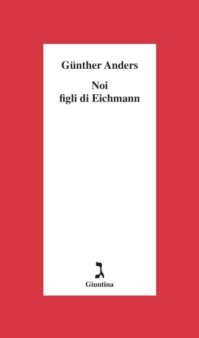

29:07 · 3 OPERE
La sovversione della razionalità.
Il filo del discorso
La rimozione di un precedente contributo dalla piattaforma è l’occasione per una critica del potere che si presenta come protettore della libertà mentre, secondo Dr Divago, ne restringe l’esercizio. Il relatore interpreta il messaggio di moderazione, il premio alla libertà di espressione assegnato nel 2021 a Susan Wojcicki e il linguaggio della sicurezza come esempi di questa contraddizione. La questione della responsabilità di chi esegue ordini è avvicinata a Noi figli di Eichmann di Anders; l’orizzonte di pensiero unico è accostato all’uomo a una dimensione di Marcuse e alla neolingua orwelliana. Un ricordo familiare di opposizione al fascismo introduce la possibilità della resistenza attraverso l’ironia. La chiusa, attribuita a Simone Weil, difende il dubbio contro la pretesa di una verità unica. I paragoni con totalitarismo, inquisizione e linguaggio mafioso sono giudizi polemici del relatore: il testo non dimostra un’organizzazione criminale o una equivalenza storica. Il contenuto sanitario rimosso non è disponibile nella fonte letta, perciò la scheda non ne certifica attendibilità né motivi effettivi della rimozione.
I libri nel discorso

Noi figli di Eichmann. Lettera aperta a Klaus Eichmann
Copertina: Giuntina, 1995, traduzione di Antonio G. Saluzzi.
Immagine autentica dell’opera, controllata visivamente; l’edizione di riferimento non è attribuita al filmato.
Günther Anders e Noi figli di Eichmann esplicitamente nominati.
Passaggio 8:42 ↗ · Fonti e libro ↗
1984
Identificazione probabile
Copertina: Newton Compton · edizione illustrativa
New Speak / neolingua e Orwell: rinvio probabile a 1984, senza titolo pronunciato in questo punto.
Passaggio 19:17 ↗ · Fonti e libro ↗
L’uomo a una dimensione
Copertina: Einaudi, Piccola Biblioteca Einaudi, 1999
Copertina di un’edizione bibliografica dell’opera, con introduzione di Luciano Gallino. La citazione nel video resta probabile; questa edizione non vi è confermata.
Uomo a una dimensione e Marcuse nominati nel discorso sul conformismo.
Passaggio 21:51 ↗ · Fonti e libro ↗